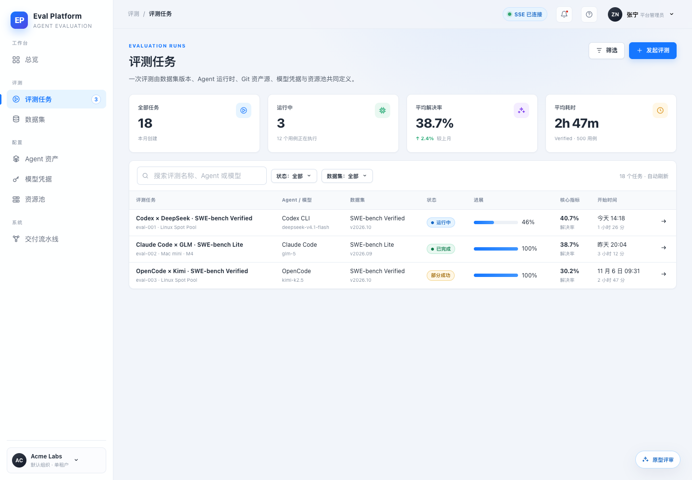
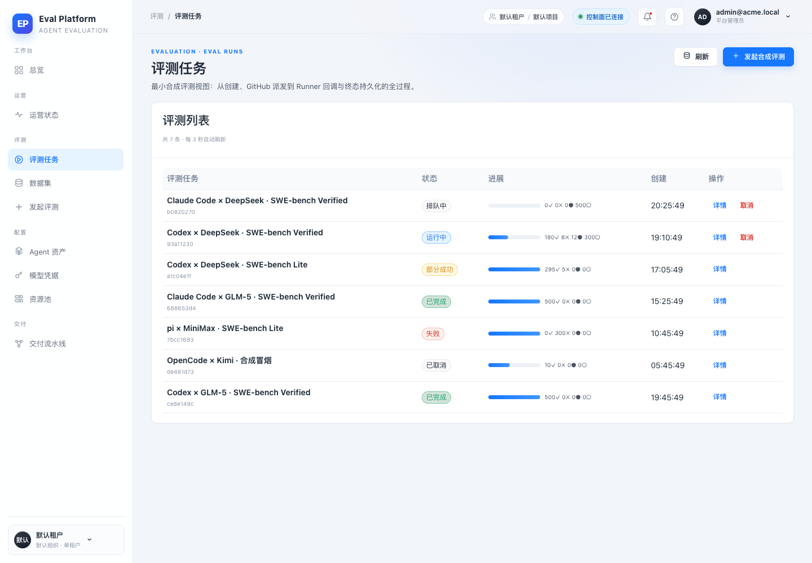
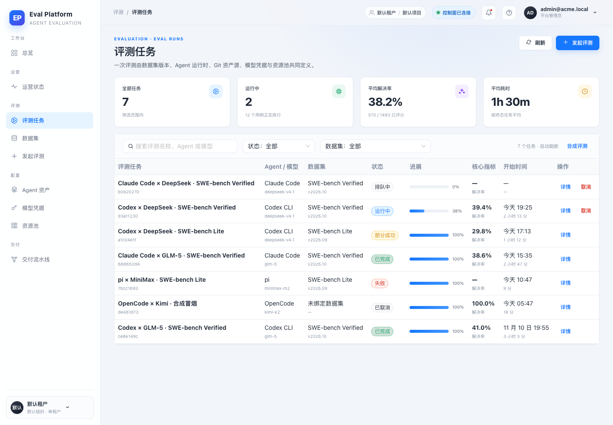
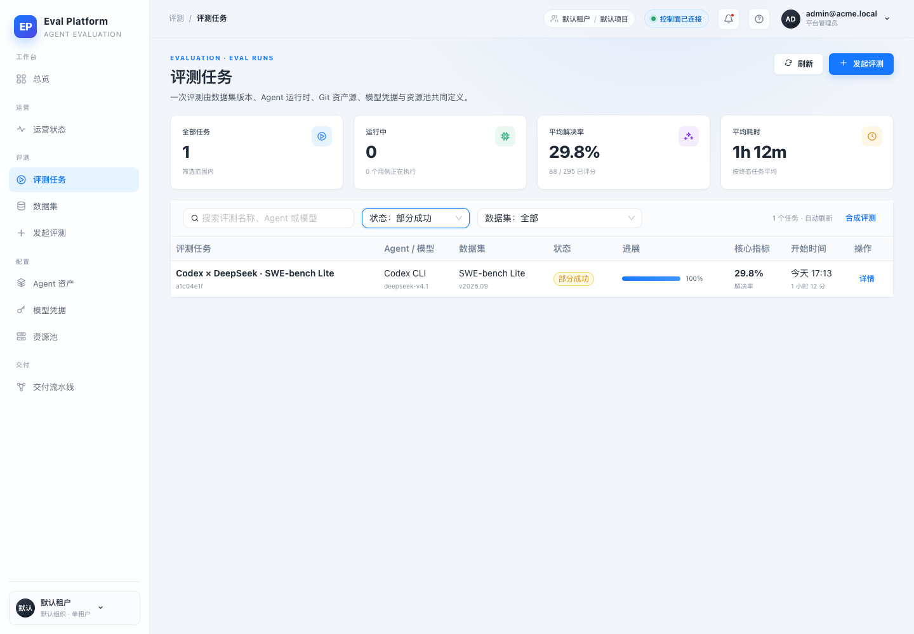
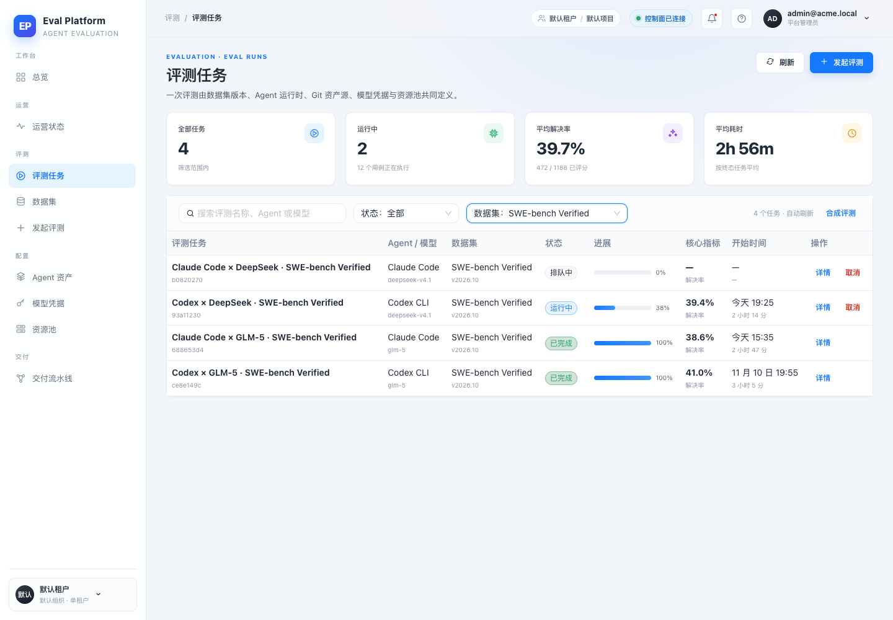
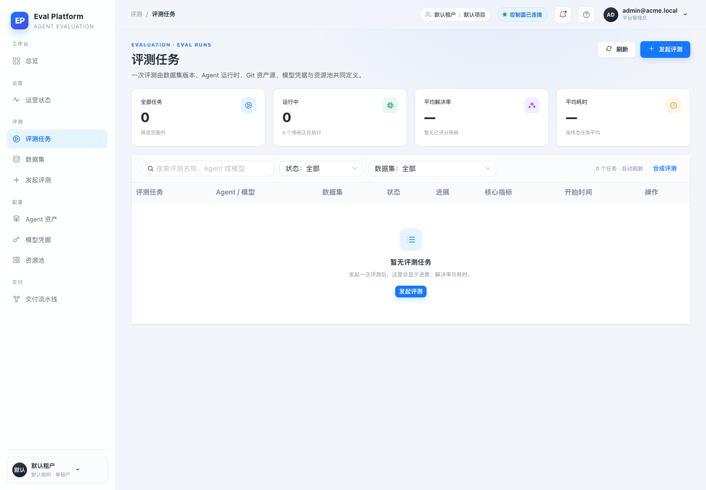
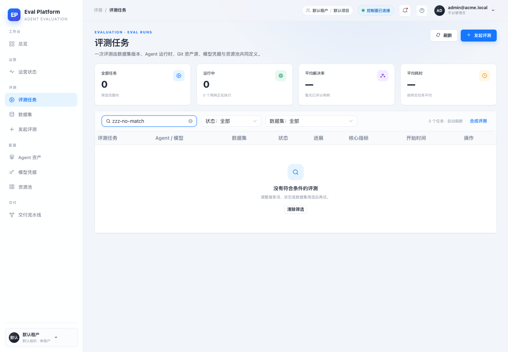

- 应用
- AI Eval Platform · M5-16 评测列表
- 提交
- 7c9d990
- 栈
- FastAPI + SQLite + Vite dev server + Chrome
- 数据
- 7 条评测：running / queued / completed×2 / partial / failed / cancelled
- 对比基线
- 52be752（origin/main，改造前页面）
- 设计依据
- plans/m1-02-fullstack-design/06 §2；.agents/notes/adr-0002-eval-run-status-enum.md
- 外部资源
- 未接入模型、云 Runner 或对象存储；本页只读聚合
Local stack · FastAPI / SQLite / Vite / Chrome
M5-16 评测列表统计筛选与部分成功 · 集成冒烟报告
在本地开发栈上验证 M5-16：评测列表新增 4 张服务端统计卡、搜索与状态/数据集筛选，补齐 Agent/模型、数据集版本、解决率、开始时间与耗时列，并按状态枚举渲染「部分成功」。7 条演示评测覆盖运行中、排队、完成、部分成功、失败与取消；13 项页面断言全部通过，状态筛选后统计卡同步重算，搜索与数据集筛选可叠加，空态与筛选无结果态均有截图。
584 passed / 1 skipped后端测试
typecheck + vite build 通过前端构建
13 通过 · 0 失败冒烟断言
0缺陷
Environment and Artifact
2026-11-11 · AI Eval Platform · M5-16 (#144) · 对比基线 52be752Scenario Matrix
9 pass · 1 manual| # | 场景 | 结果 | 说明 | 证据 |
|---|---|---|---|---|
| 01 | 初始空态 | PASS | 无评测时显示 4 张统计卡的零值与带「发起评测」入口的空态；改造前只有 antd 默认「暂无数据」。 | 01-empty-state.png 00-before-empty.png |
| 02 | 列表与统计卡 | PASS | 7 条评测显示为全部任务 7、运行中 2（12 个用例执行中）、平均解决率 38.2%（570/1493）、平均耗时 1h 30m。 | 02-populated.png 00-before-populated.png |
| 03 | 部分成功状态 | PASS | 同时含成功与失败用例的评测显示「部分成功」，解决率 29.8%，不折叠为失败或已完成。 | 02-populated.png |
| 04 | 状态筛选联动统计 | PASS | 筛选「部分成功」后仅 1 行；统计卡重算为全部任务 1、运行中 0、平均解决率 29.8%。 | 03-filter-partial.png |
| 05 | 数据集筛选 | PASS | 筛选 SWE-bench Verified 后 4 行，统计卡与解决率同步按筛选范围重算。 | 05-filter-dataset.png |
| 06 | 搜索叠加筛选 | PASS | 在数据集筛选上叠加关键字 GLM，命中 2 行；搜索覆盖名称、Agent 与模型，查询在服务端完成。 | 05-filter-dataset.png |
| 07 | 筛选无结果态 | PASS | 搜索 zzz-no-match 时展示「没有符合条件的评测」与「清除筛选」，区别于真正的空态。 | 04-filtered-empty.png |
| 08 | 原型 UI 对齐 | PASS | 同视口对比原型：4 卡布局、筛选栏（状态：全部/数据集：全部）、列顺序与「部分成功/已完成」标签一致；保留线上行内取消。 | proto-evals.png 02-populated.png |
| 09 | 服务端过滤与聚合 | PASS | pytest 覆盖 q/status/dataset_id/offset、非法状态 422、解决率与平均耗时聚合、部分成功与数据集/Agent 列。 | — |
| 10 | 真实 Runner / 模型执行 | NOT IN SCOPE | 列表页只读控制面聚合，本 issue 不创建模型调用或云资源；真实执行链路由 #145 及后续详情页验收。 | — |
Issues and Observations
P3 issue #144 中引用的审计基线截图已 404issue #144 中引用的审计基线截图已 404
- Actual
- raw.githubusercontent.com/.../ui-vs-prototype-audit/reports/.../live_evals.png 返回 404。
- Expected
- 改造前列表截图可用于 Before/After 对照。
- Workaround
- 从 origin/main 52be752 新建临时 worktree，用同一份 SQLite 数据重新截取真实基线。
Recorded · baseline regenerated
Evidence
7 screenshots






Automated Coverage Assessment
4 areas reviewed| 领域 | 覆盖 | 结论 | 建议 |
|---|---|---|---|
Conclusion
Ready for review统计卡、搜索/状态/数据集筛选、完整列与部分成功状态均按原型和 ADR 落地，自动化断言与构建全绿。
- PR 描述包含原型、改造前、改造后的同视口截图对照。
- 真实 Runner/模型调用不在本页范围，由执行链路验收覆盖。
- 空态与筛选无结果态均已截图留证。
本报告由 computer-use-smoke-reporting 生成；截图与数据仅来自本地演示环境。